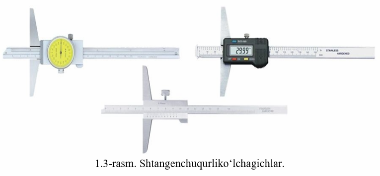
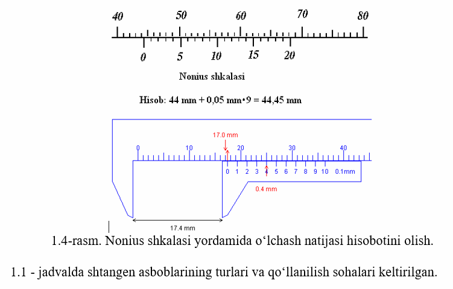

Mashgʻulotning maqsadi: Universal oʻlchash asboblaridan boʻlgan, har xil geometrik
kattaliklarni oʻlchash
uchun ishlatiladigan shtangenasboblar, ularning tuzilishi va turlari bilan tanishish. Detallarning
shakli, oʻlchami, kattaliklariga qarab oʻlchash uchun shtangenasboblarni asboblarini tanlash va ulardan
mashina detallarini oʻlchash ishlarida foydalanishni oʻrganish.
Shtangen asboblar - oʻlchash va belgi qoʻyish uchun moʻljallangan asboblarning katta guruhidir.
Bu
asboblarning boshqa asboblardan farqlovchi xususiyati shuki, bularda har bir 1 mm da boʻlinmalari bor
shkalali lineyka (shtanga) qoʻllaniladi, millimetrini oʻnli va yuzli qismlari esa asosiy shkaladan
yordamchi (qoʻshimcha)-nonius shkalasi yordamida oʻqiladi.
Shtangen asboblarga keng tarqalgan shtangensirkullar (1.1-rasm), shtangenreysmuslar (1.2-rasm),
shtangenchuquroʻlchagichlar kiradi (2.1-rasm). Shtangenasbobning asosiy detali uning metall lineykasi
boʻlib, unda millimetrli shkala uyilgan va unga siljiydigan ramka kiygizilgan. Shtanga shkalasining har
bir boʻlinmasi 1mm ga teng. Siljiydigan yordamchi shkala – nonius asosiy shkala boʻlinmasining
ulushlarini hisoblashga imkon beradi. Nonius qurilmasi asosiy shkala va nonius shkalasi boʻlinmalari
intervallarining farqiga (ayirmasiga) asoslangan. Misol: agar asosiy shkala boʻlinmasining intervali 1
mm ga, nonius shkalasi boʻlinmasining intervali 0,9 mm ga teng boʻlsa, u holda nonius boʻyicha hisoblash
qiymati 1,0 - 0,9 = 0,1 mm ga teng.

Shtangenasboblar nonius hisoblash qiymati boʻyicha 0,1 mm va 0,05 mm chiqariladi. Eng koʻp tarqalgan 0,1
mm noniusli shtangenasboblar 10 boʻlinishli 9 mm uzunlikdagi nonius shkalasiga egadir. Nonius shkalasi
ikki qoʻshni shtrixlari (boʻlinmasi) orasidagi masofa 0,9 mm ga teng, ya‘ni nonius shkalasi boʻlinmasi
shtanga shkalasi boʻlinmasidan 0,1 mm ga kaltadir.
Oʻlchash vaqtida nonius qurilmasi boʻyicha hisoblash asosiy shkalada millimetrning kasr ulushlarini
aniqlashdan iborat. Noniusning nol shtrixi koʻrsatkich boʻlib xizmat qiladi, boʻlinmaning ulushlari esa
nonius shtrixlaridan birining asosiy shkala shtrixiga toʻg‘ri kelishi bilan aniqlanadi (1.4 - rasm).

Hozirgi paytda oʻlchash ishlarini bajarishda electron shtangensirkullar qoʻllanilmoqda. 2.3-rasmda
detallarning ichki tashqi oʻlchamlarini oʻlchashga moʻljallangan elketron shtangensirkulning umumiy
koʻrinishi tasvirlangan. Bu asbob 0 0C dan 40 0C gacha haroratda, agar havoning
nisbiy namligi 80% gacha
bolganda esa harorat 25 0C boʻlgan sharoitlarda qoʻllaniladi. Ishchi harorati 5…40
0C oralig‘ida. Unda
raqamli qayd etish qurilmasi boʻlib, noniusining qiymati 0,01 mm ga teng. Oʻlchashlarda roʻxsat etilgan
xatoligi quyidagicha: 0 dan 100 mm gacha oʻlchamlarni oʻlchashda 0,02 mm; 100 mm dan yuqori 200 mm
gacha oʻlchamlarni oʻlchashda 0,03 mm; 200 mm dan yuqori 300 mm gacha oʻlchamlarni oʻlchashda 0,04 mm.
Asbobning ichki oʻlchamlarni oʻlchovchi jag‘larining parallellik joizligi 0,010 mm, tashqi
oʻlchamlarni
oʻlchovcho jag‘larininki esa 0,02 mm. Asbobning raqamli qayd etish qurilmasi oʻrnatilgan harakatlanuvchi
qismining harakatlanish tezligi 1,5 m/s.
Asbob oʻlchashdan oldin oʻlchash oʻtkazildagan xonada 3 soatdan kam boʻlmagan muddat davomida
turishi
talab etiladi.
Har qanday oʻlchash vositasi me’yorlangan metrologik tavsiflarga ega boʻladi.
Oʻlchash vositasining metrologik tavsifi – bu oʻlchash vositasining oʻlchash natijasiga va uning
xatoligiga ta’sir etadigan xossalaridan birining tavsifi.
OʻzDSt 8.010.2:2003 “Oʻzbekiston respublikasining oʻlchashlar birliligini ta’minlash davlat tizimi.
Metrologiya. Atamalar va ta’riflar. 2-qism. Oʻlchash vositalari va ularning parametrlari” davlat
standartida oʻlchash vositalarining metrologik tavsiflari koʻrsatib berilgan.
Oʻlchash vositalarining har biri uchun oʻzining metrologik tavsifi belgilanadi. Me’yoriy hujjatlar
tomonidan belgilangan metrologik tavsiflari me’yorlangan metrologik tavsiflar, tajriba yoʻli bilan
aniqlanadigani esa, haqiqiy metrologik tavsiflar deyiladi.
Oʻlchash vositalarining metrologik tavsiflariga quyidagilar kiradi:
- oʻlchash vositasining oʻlchash koʻlami - oʻlchash vositasi xatoligining joiz chegaralari
me’yorlangan
kattalik qiymatlari doirasi;
- shkala boʻlinmasining uzunligi – shkaladagi eng qisqa belgilarning oʻrtasidan oʻtgan tasavvur
etilgan
chiziq boʻylab oʻlchangan yondosh ikkita belgining chiziqlari (yoki markazlari) oʻrtasidagi oraliq;
- shkala boʻlinmasining qiymati – kattalikning oʻlchash vositasi shkalasidagi ikkita yondosh belgiga
mos
keluvchi qiymatlar farqi;
- shkalaning boshlang‘ich qiymati – oʻlchash vositasining shkalasi boʻylab oʻlchanadigan
kattalikning
eng kichik qiymati;
- shkalaning oxirgi qiymati – oʻlchash vositasining shkalasi boʻylab oʻlchanadigan kattalikning eng
katta qiymati;
- nolning siljishi – kirish signali nolga teng boʻlganida oʻlchash vositasining noldan farqli
koʻrsatuvi;
- oʻlchash vositasining keltirilgan xatoligi – oʻlchash koʻlami boʻyicha taxminan doimiy mutlaq
xatolikka ega boʻlgan oʻlchash vositalarining joiz xatoligi chegarasini ifodalash usuli.
Absolyut xatolikni asbob koʻrsatishining eng maksimal qiymatiga nisbatini аkmах fоizlаrdа olinganiga
keltirilgan xatolik deb ataladi:
Βх=(Δ/аk mах) 100%,
bu yerda: Δ – absolyut xatolik; аkmах – asbob oʻlchash diapazonining eng katta qiymati.
- sezgirlik ostonasi – bu oʻlchanadigan kattalikning shunday eng kichik (boshlang‘ich) qiymatiki, u
oʻlchash asbobining chiqish signalini sezilarli oʻzgarishiga olib keladi.
S = Х min/Х nоm*100 %,
bu yerda, Хmin – oʻlchanadigan kaggalikning eng kichik (boshlang‘ich) qiymatidir.
- asbob koʻrsatishining variatsiyasi – oʻlchanayotgan kattalikning biror qiymatini, oʻlchash sharoitini
oʻzgartirmagan holda, takror oʻlchaganda hosil boʻladigan eng katta farqdir va u quyidagicha aniqlanadi
(5.1 – rasm):
y = (А 0’ – А 0”)/А хmах*100 %,
bu yerda, А 0 ʻ, А 0 "– oʻlchanayotgan kattalikning (namunaviy asbob yordamida)
takror oʻlchashdagi
qiymatlari. Variatsiya asosan qoʻzg‘aluvchan qismi tayanchga oʻrnatilgan asboblarda ishqalanish hisobiga
kelib chiqadi.
- sezgirligi – bu oʻlchash vositasining tashqi signalga nisbatan ta’sirchanligi, sezuvchanligidir.
Umumiy holda sezgirlik oʻlchash vositasining chiqish signali orttirmasini, kirish signali orttirmasiga
nisbatidan aniqlanadi:
Bevosita koʻrsatuvchi asboblar uchun sezgirlik asbob qoʻzg‘aluvchan qismining og‘ish burchagini
oʻlchanadigan kattalik boʻyicha birinchi hosilasi boʻlib, quyidagicha ifodalanadi:
S = da /dx,
bu yerda da – asbob qoʻzg‘aluvchan qismining og‘ish burchagi.
- oʻlchash vositasining aniqlik klassi – mazkur oʻlchash vositalarining umumlashtirilgan tavsifi
boʻlib,
ularning odatda, asosiy va qoʻshimcha joiz xatoliklarining chegaralari, shuningdek aniqlikka ta’sir
etuvchi boshqa tavsiflar bilan ifodalanadigan aniqlik darajasini aks ettiradi.
Aniqlik klassi bir xil oʻlchash vositasining xatoligi qaysi chegarada joylashganini bilishga imkon
beradi, lekin bu vositalarning har biri bilan bajariladigan oʻlchashlarning aniqligini bevosita koʻrsata
olmaydi. Muayyan oʻlchash vositasining aniqlik klassi texnik talablar (shartlar) standartlarida yoki
belgilangan tartibda tasdiqlangan boshqa texnik hujjatda koʻrsatilgan boʻladi.
Oʻlchashlarni amalga oshirish uchun oʻlchash asboblarini tanlashda albatta ularning metrologik
tavsiflariga alohida e’tibor berish talab etiladi.
Topshiriq. Berilgan oʻlchash asboblarining tuzilishi, ishlash prinsipi bilan tanishing va
qoʻllanilish
sohalarini aniqlang. Har bir oʻlchash asbobining metrologik tavsiflarini oʻrganib chiqing va olingan
xulosalar natijasiga koʻra quyidagi 1.2-jadvalni toʻldiring.
Izoh: Talabalar topshiriqni bajarishda ikki guruhga ajraladilar. Topshiriqni bajarib
boʻlishgach,
natijalarni oʻzaro solishtirib toʻg‘ri va notoʻg‘ri javoblarni muhokama qiladilar.
Takrorlash uchun savollar:
1. Sntangenasboblar qanday asboblar turiga kiradi?
2. Shtangensirkullarning qanday turlarini bilasiz?
3. Shtangensirkullarning tuzilishini tushuntirib bering.
4. Shtangenreysmaslar qanday maqsadlarda qoʻllaniladi?
5. Shtangenchuqurlikoʻlchagichlar haqida aytib bering.
6. Nonius nima?
7. Shtangenasboblardan oʻlchash natijalari qanday oʻqiladi?